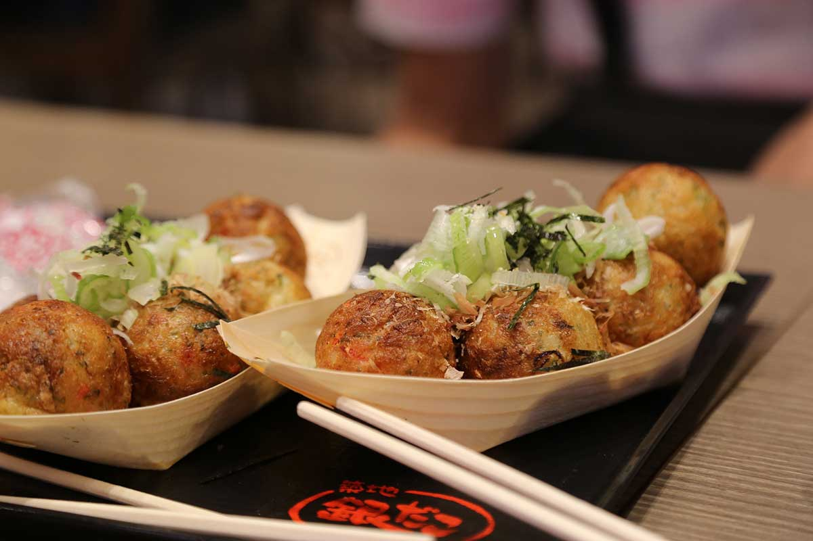

Takoyaki
Descrizione
Nel nostro immaginario occidentale i takoyaki (たこ焼き) hanno un posto speciale, sono lo street food giapponese per eccellenza.
Sono le classiche polpettine di polpo (tako), condite con maionese e katsuobushi (fiocchi di tonno disidratato) che i personaggi dei manga mangiano per strada, sotto i ciliegi in fiore, dopo averli comprati da una signora con i capelli grigi raccolti in un concio. Assieme all’okonomiyaki, è il piatto simbolo della cucina di Osaka, una zona rinomata per la sua cucina e le grandi specialità gastronomiche.
Ingredienti per 2 persone
- 120 grammi di farina
- 1.5 Uova
- 250 ml di brodo dashi
- 7.5 ml di Salsa di Soia
- 12.5 grammi di Benishouga
- 1 cipollotto verde
- 50 grammi di polpo
Per fare il condimento
- 20 grammi di maionese
- 5 grammi di alga Aonori
- Katsuobushi
- salsa Otafuku

Preparazione
- Fai bollire il polpo. Taglia il polpo bollito in pezzettini non più grandi di un centimetro e ricorda che il polpo non deve essere troppo cotto ma appena sbollentato.
Affetta finemente l’erba cipollina e tritura il beni shoga in piccoli pezzettini di un paio di millimetri di spessore .
- Sbatti la farina insieme al brodo dashi, all’uovo, al sale e allo zucchero fino a quando ottieni un composto privo di grumi e mettilo in un recipiente con beccuccio che servirà per versare il composto sulla piastra .
- Scalda la piastra per takoyaki ed oliala molto bene per evitare che la pastella si attacchi durante la cottura. Quando la piastra è calda versa il composto preparato precedentemente in modo da riempire tutti gli spazi. Non preoccuparti se parte della pastella va fuori dagli stampini perché servirà per andare a comporre le palline.
- Inizia col mettere i pezzetti di polpo in modo che in ogni polpettina ce ne siano almeno uno o due. Dopo il polpo disponi anche l’erba cipollina e il beni shoga.
Quando la pastella sul fondo degli stampini comincia a cuocere usa uno spillone per girare le palline e mentre lo fai cerca di utilizzare la pastella in eccesso per coprire gli ingredienti con la pastella in modo uniforme.
- Dopo aver formato tutte le palline continua a girarle per un po’ fino a quando assumono una colorazione dorata. A questo punto puoi toglierle dalla piastra e metterle in un piatto di portata.
- Cospargi sulle polpettine la salsa Otafuku per takoyaki, la maionese e successivamente le alghe aonori tritate ed il tonno essiccato.
Indietro alla home